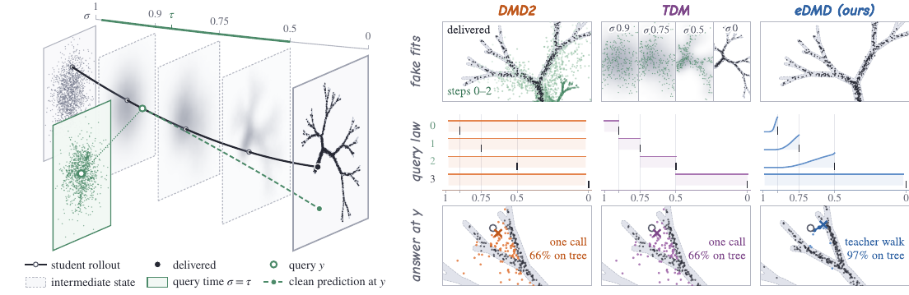
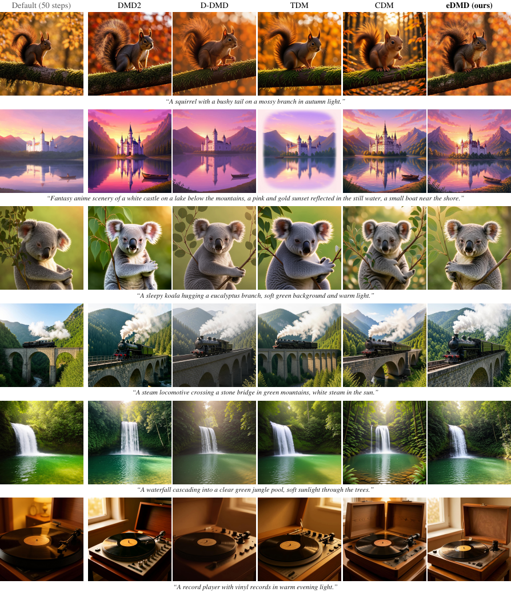

Paper Notes
Problem: Which Distribution Should the Fake Model Match?
DMD 类方法用冻结 teacher score A、student score G 和 fake score F，把昂贵的多步 teacher 压成 4-step student。eDMD 认为 fake model 的训练分布必须是最终输出 q，而不是多个中间 denoising stage 的混合 ν；最终样本才是部署时交付的分布。
输入是文本 prompt 与高斯噪声，student 做 K 步 rollout，输出最终 x=z_K。训练更新 F 时只用这些 endpoint；更新 G 时随机抽一个步骤，用当前步骤预测重算 x_hat_k，历史状态 detach。
Paper Notes
Reading Figure 2: Endpoint, Query, Teacher

Zhao et al. (2026), original figure rendered from author source; CC BY 4.0 · Paper & Caption ↗
图 2 用一个 2D tree distribution 展示训练接口。左边 student 从 σ=1 到 σ=0 交付最终输出；训练时把某个步骤的预测加噪到查询 y，再比较 teacher 与 fake。右边三处差异分别是：fake 只看最终输出、query level 从校准密度采样、低噪声 query 用多步 teacher 回答。
这不是让 student 每步都和 teacher 的完整轨迹相同。它把 fake score 的支持集对准最终 q，同时仍用不同步骤的查询把 endpoint 的误差传回各步。
Paper Notes
Endpoint Correction
A 是 teacher denoiser，D_p 是真实 teacher 分布 p 的最优 denoiser，D_q 是 student endpoint 分布 q 的最优 denoiser，D_ν 是 fake 训练分布 ν 的最优 denoiser。三项分别对应 teacher error、endpoint matching error 和 reference residual。若 denoiser 精确且 q=p，前两项为零；若再令 ν=q，第三项也为零。
论文的理论条件是分布与 denoiser 理想化时的零修正条件，不是实际训练收敛保证。它解释了为什么把 mixture 直接当 fake target 可能在 q=p 时仍产生错误方向。
C = A − F = (A − D_p) + (D_p − D_q) + (D_q − D_ν)
Paper Notes
Training Algorithm
每次 G 更新先无梯度完成 K-step rollout，取 endpoint x=z_K；对随机步骤 k，用当前 G 重新计算 x_hat_k（这一步保留梯度），历史 rollout states detach。teacher A 和 fake F 在 query y 上给出 C=A(y,τ)−F(y,τ)。ω 是 x_hat_k 与 teacher 输出差异的平均绝对值，用来缩放 surrogate target；梯度只穿过被选中的 G step，不做 K 步 BPTT。
F 的目标是对 endpoint 加噪后的样本做 denoising regression，权重使用 clipped SNR。precise teacher 在需要时用短多步 teacher ODE；calibrated query density ρ_k 让 τ 不早于下一阶段的 landing noise，并根据 cross-level consistency 离线校准。
L_G=E || x_hat_k − sg[x_hat_k + C/ω] ||²
Paper Notes
Image Evidence and Ablations

Zhao et al. (2026), original figure rendered from author source; CC BY 4.0 · Paper & Caption ↗
实验只覆盖图像生成：SD3-Medium、FLUX.2-klein-4B/9B 和 Qwen-Image-2.1。学生为 4 steps；SD3/FLUX 用 191,500 个提示、2,000 updates，Qwen 用改写 prompt、600 updates。DrawBench-1000 每 prompt 5 seeds；DPG-Bench 单独评估。峰值是在训练中按 HPSv3++ 选 checkpoint，所以不是无偏的最终一次测试。
表中 peak HPSv3++：SD3 DMD2 10.270、D-DMD 10.841、eDMD 11.171；FLUX.2-klein-4B DMD2 11.337、eDMD 12.699；9B eDMD 12.431；Qwen eDMD 14.691，均为作者协议下的图像指标。组件消融 SD3 full 11.171、去掉 endpoint 10.122、去掉 precise teacher 11.026、去掉 calibrated query 10.798；FLUX-4B full 12.699、去掉 endpoint 11.095、去掉 precise teacher 11.667、去掉 query 12.507。
图 1 的 Qwen 样例说明 4-step 可以保留文字和风格，但它只说明视觉样例，不说明时间一致性。
Paper Notes
Boundary for VideoGen Use
这篇论文没有视频 teacher、时序 token、FVD 或长时 rollout，因此不能直接声称 eDMD 改善 VideoGen。可迁移的部分是：若视频 student 也有 endpoint distribution 与多阶段中间状态，就应先定义交付的视频片段分布，再决定 fake/reference 的支持集；否则中间状态的混合可能把训练信号偏向不存在的部署分布。
后续可做一个受控实验：固定视频 latent、teacher steps 与 student steps，只替换 mixture reference 为 endpoint reference，并报告 per-frame quality、temporal consistency、FVD/CLIP、显存和 teacher queries。这样才能把 eDMD 的分布假设转化为 VideoGen 证据，而不是把图像结果外推。
Discussion
Reading Questions
What is the main novelty in one sentence?
把 fake model 的参考分布从中间状态混合改成学生最终输出，并用查询校准和精确 teacher 减少其余偏差。
Why is endpoint matching relevant to videos?
视频部署交付的是完整片段分布；若 fake 只学习若干中间 latent，score 可能对部署时的最终片段不正确。但这一点需要视频实验验证。
Which result should not be overclaimed?
HPSv3++、DPG 和图像样例都来自图像模型；它们不能替代视频 temporal consistency 或 FVD 结果。
What is the cleanest next experiment?
在同一个视频蒸馏设置中只切换 reference distribution，保持 teacher/student steps 和训练预算不变，并做 endpoint-vs-mixture 的消融。
References
Original figures reproduced from the papers and author source under CC BY 4.0; captions identify the source. eDMD is an image-generation paper and is labeled as such.
Verified on 2026-11-22. Paper results refer to the linked versions. Repository references were checked on this date.